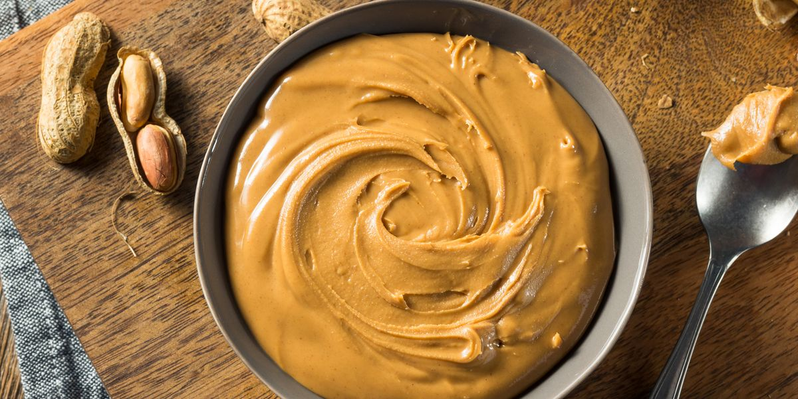

Peanut Butter
This is a paragraph about peanut butter.
Peanut Butter is light brown in color and quite sticky in texture.
Peanut butter is a food paste or spread made from ground, dry-roasted peanuts.
It commonly contains additional ingredients that modify the taste or texture, such as salt, sweeteners, or emulsifiers.
Peanut butter is consumed in many countries.
The United States is a leading exporter of peanut butter and one of the largest consumers of peanut butter annually per capita.
January 24 is National Peanut Butter Day in the United States.
Peanut butter is a nutrient-rich food containing high levels of protein, several vitamins, and dietary minerals.
It is typically served as a spread on bread, toast, or crackers, and used to make sandwiches (notably the peanut butter and jelly sandwich).
It is also used in a number of breakfast dishes and desserts, such as granola, smoothies, crepes, cookies, brownies, or croissants.
It is similar to other nut butters such as cashew butter and almond butter.
I don't actually like peanut butter that much.